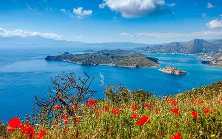

Критический реализм

На Крите можно купаться и загорать с мая по октябрь. Добавь к этому прямой перелет, местное гостеприимство и отличный европейский сервис - и планируй отпуск! Текст:ВИТА ЗОРИНА Греческий остров Крит омывается разу двумя морями - Средиземным и Эгейским - и радует десятками приекрасных песчаных пляжей. В разных его частях климат немного отличается, но на качество отдыха это никак не влияет. Перед путешествием надо получить шенгенскую визу, но Греция выдает ее без проблем. Обязательно положи в чемодан удобную обувь: по Криту можно гулять целыми днями - и лучше не в туфлях на каблуках. Поездить по острову тоже стоит. Возьми машину напрокат, закажи такси или экскурсионную программу - здесь надо увидеть не только море!